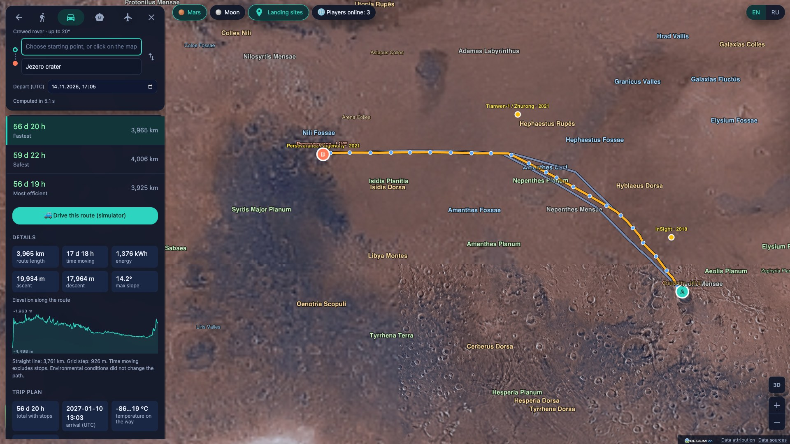
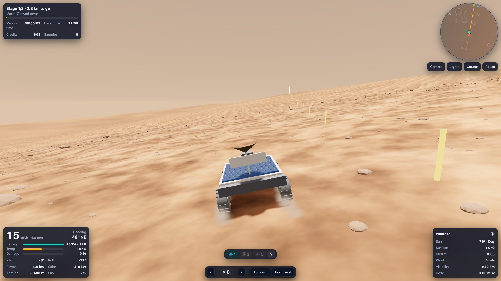
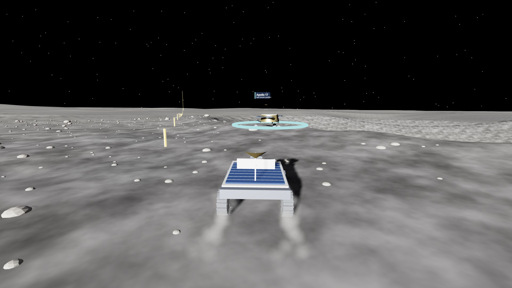
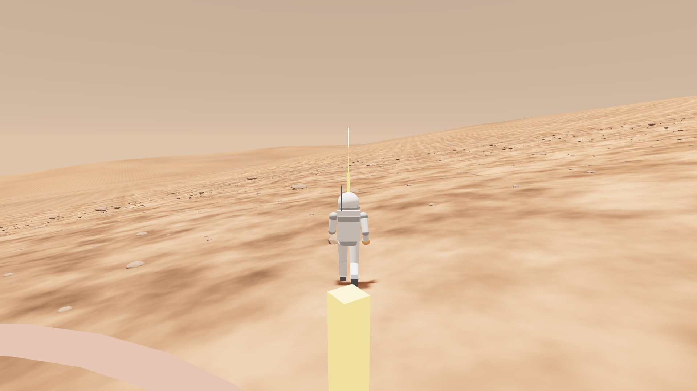
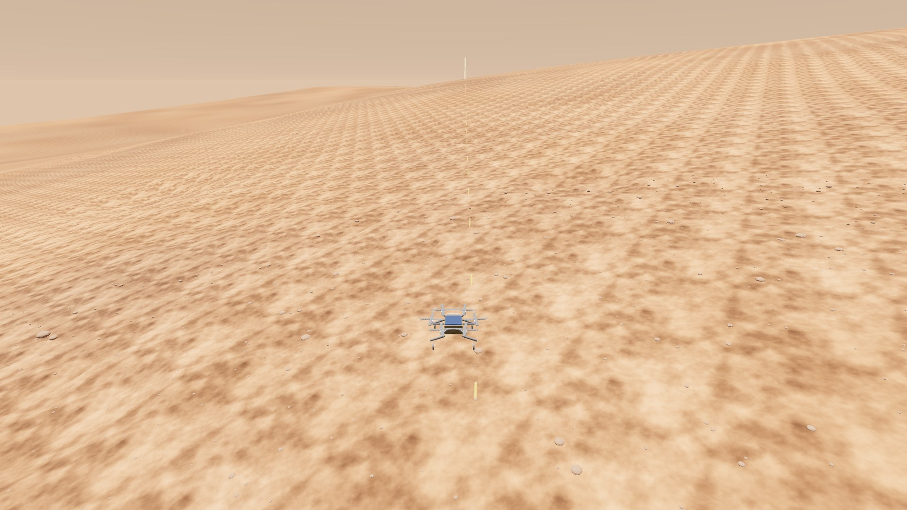
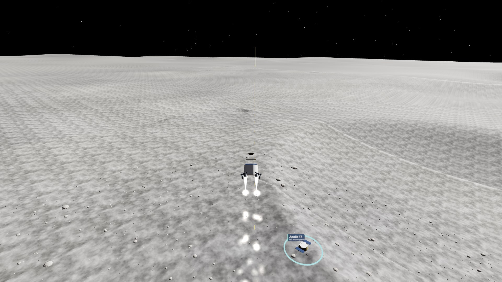
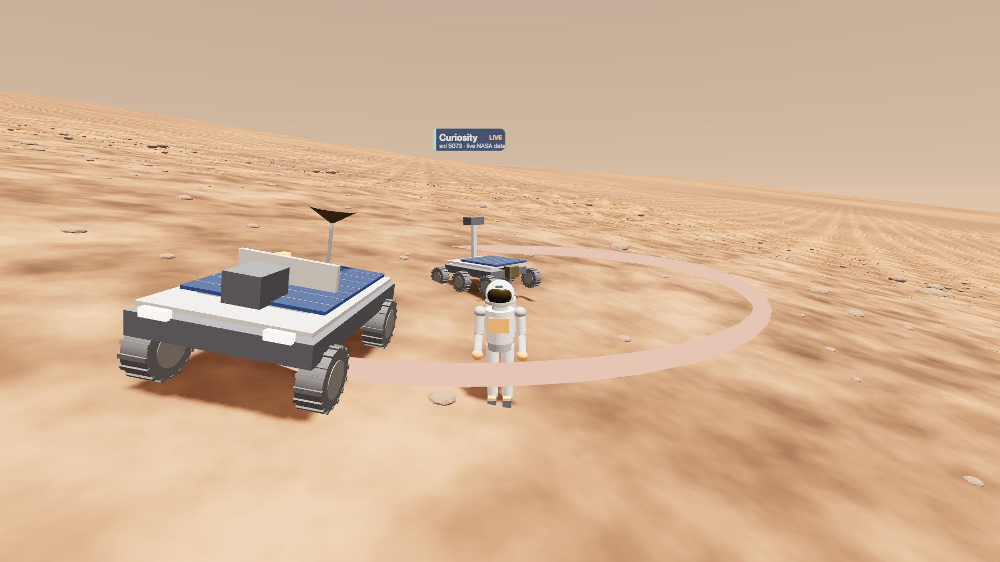
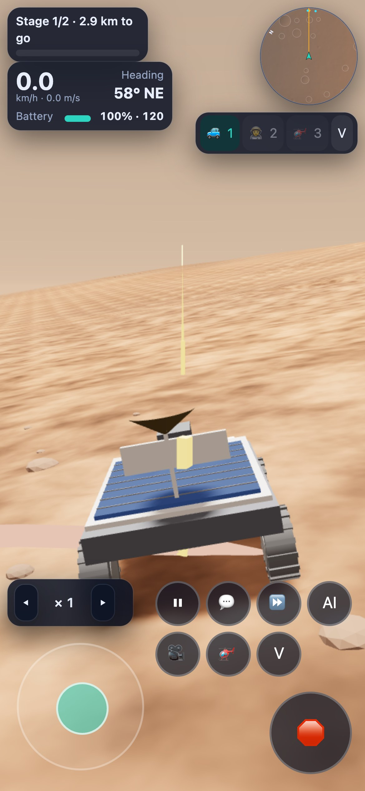

Routes Beyond Earth · map and simulator
A layered Moon and Mars navigator with route planning for an astronaut on foot, a crewed rover, a robotic rover and a drone, a physics-based driving and walking simulator on the same NASA terrain, a drone, a shared multiplayer world and live NASA/JPL rover positions.
Why there is no live button here. This page is hosted on GitHub Pages, which serves static files only. The map and the simulator need a small Python server and about 10 GB of NASA elevation data (MGS MOLA for Mars, LRO LOLA for the Moon), so they run on the team's computer. Below are screenshots of the running application and the steps to start it. The Earth-analog tool, Analog Atlas, runs fully in the browser.
Plan and compare routes



Drive and walk on real terrain








Run it yourself
git clone https://github.com/Merdanov11/analog-atlas && cd analog-atlas python3 -m venv .venv && .venv/bin/pip install -r requirements.txt mkdir -p data/mars data/moon curl -L -o data/mars/Mars_MGS_MOLA_DEM_mosaic_global_463m.tif https://planetarymaps.usgs.gov/mosaic/Mars_MGS_MOLA_DEM_mosaic_global_463m.tif curl -L -o data/moon/Lunar_LRO_LOLA_Global_LDEM_118m_Mar2014.tif https://planetarymaps.usgs.gov/mosaic/Lunar_LRO_LOLA_Global_LDEM_118m_Mar2014.tif .venv/bin/python -I server/prep.py mars && .venv/bin/python -I server/prep.py moon .venv/bin/uvicorn app:app --app-dir server --host 0.0.0.0 --port 8000 # map and simulator: http://127.0.0.1:8000/ · Analog Atlas inside it: http://127.0.0.1:8000/atlas/
Details, limits and the list of NASA data are in README_ROUTES.md. Environment figures are simplified educational models; terrain finer than the NASA maps is a labelled statistical model; the Moon hopper is a concept.